How to submit a calculation
Follow these instructions to learn how to submit you first calculation with Digichem!
Note
Make sure to follow the installation instructions before you begin.
0. Before you begin…
Before you can begin to submit new calculation, you first need to decide which structures to investigate! Digichem supports a very large variety of input structure formats, so you are free to choose whatever molecular sketching software you like.
If you are used to submitting calculations with Gaussian or Turbomole, then you likely already use GaussView or TmoleX (respectively), and you can continue to use these programs with Digichem. Note that you can freely mix between different molecular sketching software and calculation programs, so you can use GaussView to draw your molecules and still run the calculation with Turbomole or Orca.
There are many freely available and open-source programs that you can use to draw your molecules. Popular examples include Avogadro, ChemCraft, and Gabedit. For the examples shown here, we will use Avogadro.
1. Draw your molecules
Note
If you plan to use a crystal structure as your starting geometry, or the output from a previous calculation, you can skip this step.
Draw the molecules you intend to investigate in your favourite 3D sketching program. Digichem lets you submit as many molecules as you like, so it’s often best to begin by drawing all the structures that you are interested in. In this example, we will use Avogadro to draw two simple aromatic compounds:
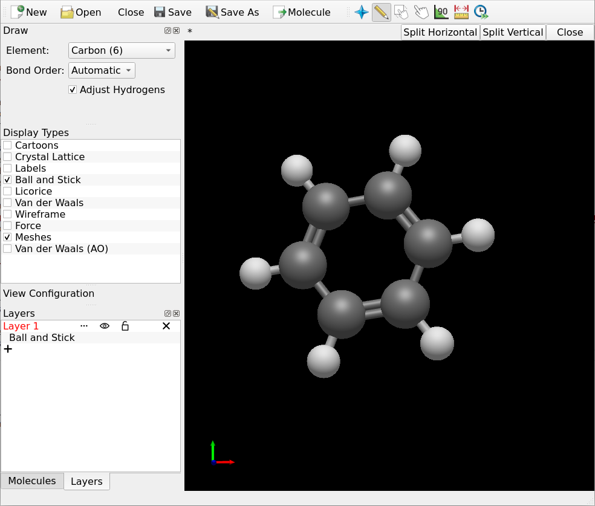 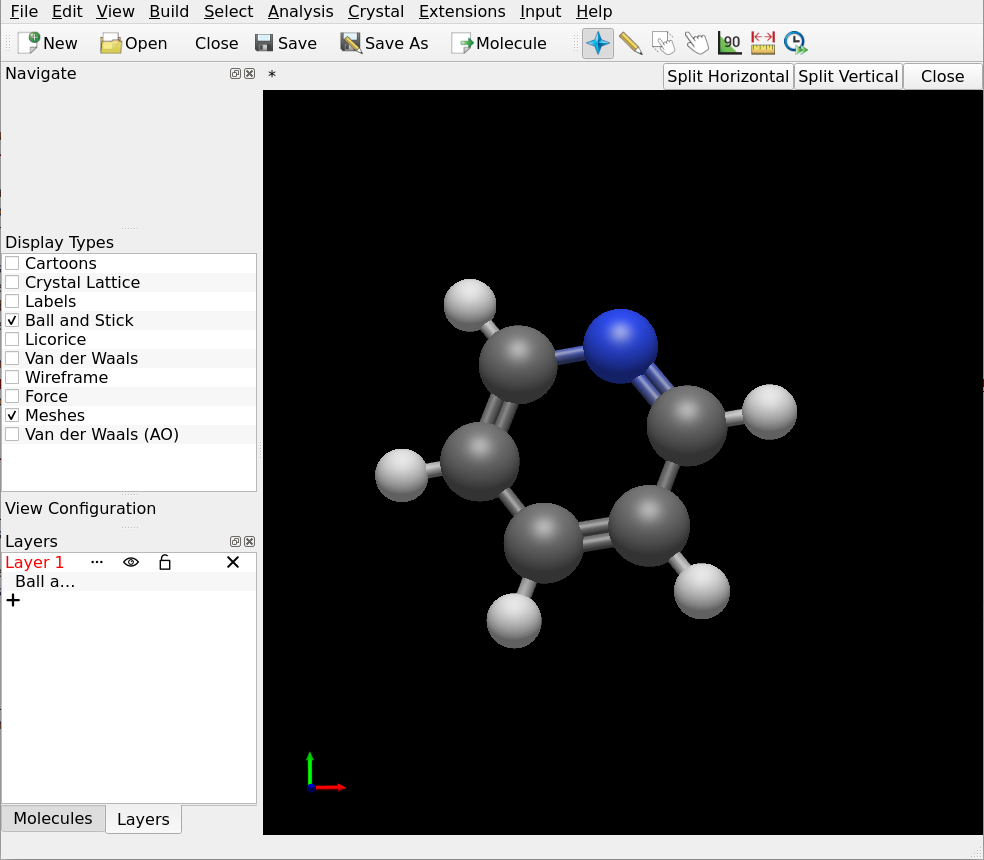Save each molecule to a separate file. The format of the file doesn’t matter (so long as it’s supported by Digichem of course), if you are unsure then .gjf/.com (Gaussian input file), .xyz, and .cml are all good choices:
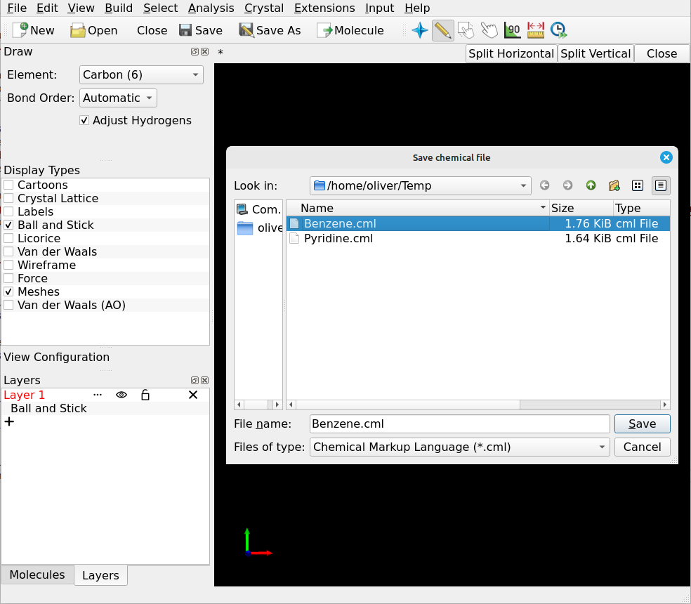2. Upload your molecules
Once you have saved all of the molecules that you want to run calculations on, the next step it to upload them to your computational server. Again, there are lots of different programs you can use to do this, popular examples include WinSCP, MobaXterm, and FileZilla.
For this example, we will use FileZilla. In the left-hand panel, locate the molecules that you want to upload, then simply drag them into the right hand panel:
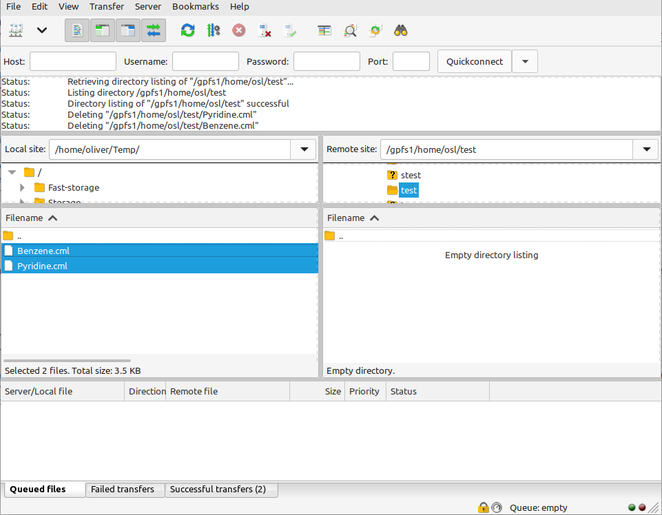 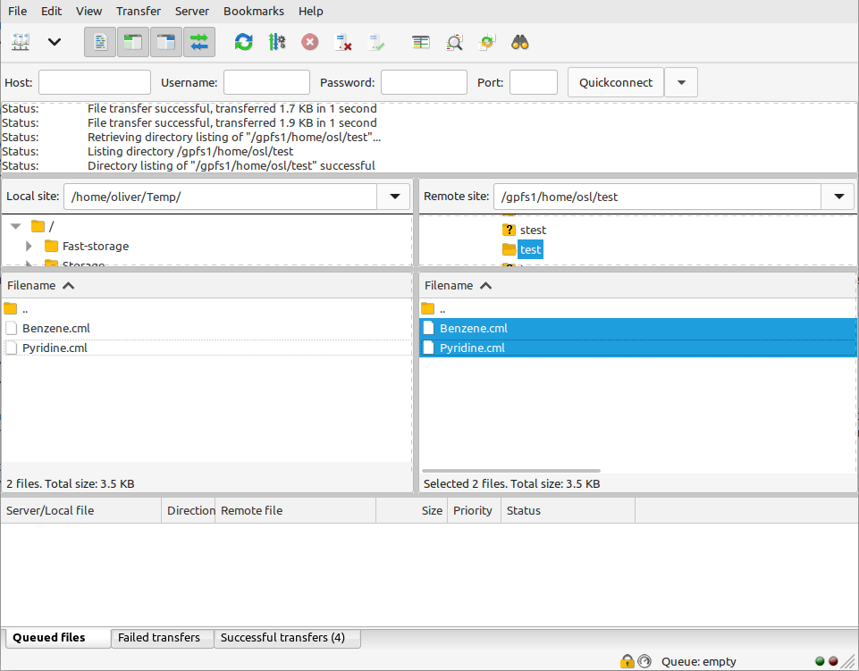3. Log in to your server
Using your usual SSH client (PuTTy, ssh, MobaXterm etc.) You will be greeted with a blank terminal:
4. Run Digichem!
Run Digichem by typing digichem I and pressing enter. This is the only command you’ll need!
Digichem will open and show you the main menu:
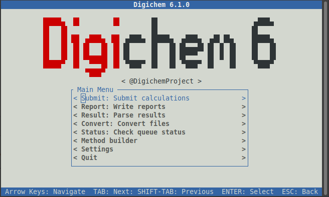Any text shown between two angle brackets (such as < Submit: Submit calculations > and < Report : Write reports >)
represents a button, you can click on these (with the mouse) to navigate to that part of the program. If you prefer,
you can also use the arrow keys (to select up and down) and the ‘enter’ key to select an option.
You can quit Digichem at any time by pressing the ‘esc’ key to go back (keep pressing ‘esc’ until the program closes).
Feel free to explore the different parts of the program as you like. For now, we’re going to submit a new calculation,
so click the < Submit: Submit calculations > button. Digichem will then switch to the calculation submission interface:
This window is split into three panels:
Input Coordinates (where we select the molecules we want to investigate):
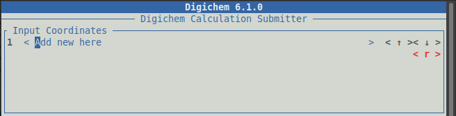
Calculation Methods (where we choose the calculation options):
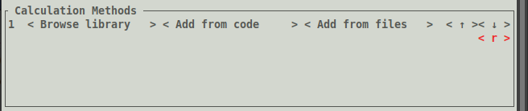
Output Options (where we can change the output location, you can normally leave this alone):
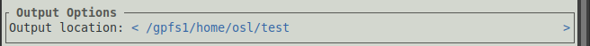
5. Load molecules
Under Input Coordinates, click the < Add new here> button to choose which molecules to load.
This will open the file browser, where we can see the two molecules that we uploaded earlier:
Clicking on the two molecules will select them. You can tell which molecules are selected by the dark background. If you select a file by mistake, simply click it again to de-select it:
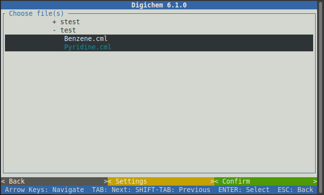Once you’ve chosen all the molecules you wish to run calculations on, click the green < Confirm > button:
A blue window will then appear to show the progress of each file being loaded.
When the process is complete, the window will say “Finished loading coordinates”.
You can then click the green < Confirm > button to close the window:
Digichem will then return to the main submission interface, where the two molecules we loaded will appear
under Input Coordinates:
Any molecules loaded by accident can be removed by clicking the red < r > button:
The charge and/or multiplicity of each molecule can be changed by clicking on the charge:
or mult: inputs and typing a new value:
In this case, we’re interested in running calculations on the closed-shell ground state, so we will
leave the charge and multiplicity as 0 and 1 respectively.
6. Choose method
Next, we need to decide what sort of calculation to perform. In Digichem, calculation options (such as the basis set, functional/wavefunction, molecular properties etc.) are grouped together into a method. Each method specifies a single calculation, and contains all the options needed to exactly run (or repeat) that calculation.
Methods can be selected in a few ways, including by a unique code (that we will cover later) and by reading from a file. However, the most common (and hassle free) approach is to use Digichem’s internal library. This is what we will do in this tutorial.
To pick a calculation to run, click the < Browse library > button under the Calculation Methods
panel:
This will open the method browser:
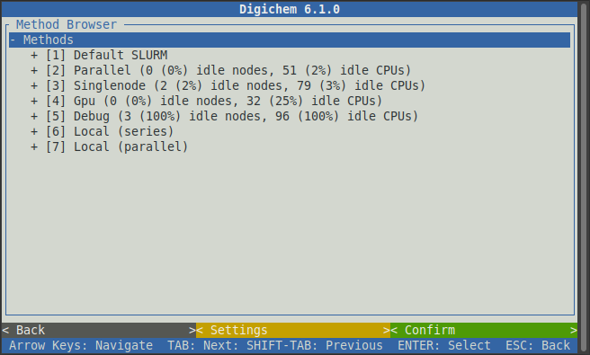Here, each calculation (or method) is broken down into its various parts, which we can then pick from the options that are offered.
The first choice is the SLURM or PBS queue that we want to submit to. The options that will be available here will depend on how your server is configured. Normally, some queues will be for short calculations only, and other queues will be for longer ones. Unfortunately, we cannot know which queues your computational server has on offer and what they are intended for, you will have to consult your own server documentation if you are unsure.
If you do not know which queue to pick, then you can chose the Default option to let the server decide for
you. In this example, we will select the Default SLURM queue by clicking on it:
This will expand the chosen queue to reveal the available calculation engines. In this example, there are 3 different versions of the Gaussian program (03, 09, and 16), one version of the ORCA program (5.0.2), and two versions of the Turbomole program (5.9.1 and 7.5) available. For this example, we will select ORCA, but of course feel free to chose whichever computational engine you wish to use.
Clicking on the chosen calculation program will then reveal a list of calculation types:
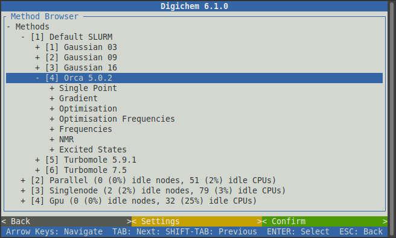We will begin by first optimising the geometry of each molecule. Clicking on the Optimisation option
will then reveal a list of functionals (and other post-HF methods), followed by a choice of solvent, and
then finally the basis set.
For this example, we will use the popular PBE0 functional, no solvent (gas phase), and the def2-SVP basis set:
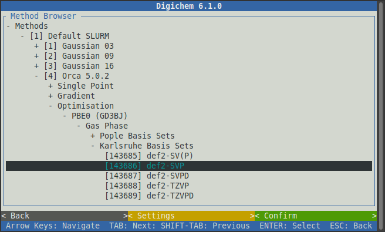The optimisation calculation generates realistic atomic coordinates, but often isn’t that useful by itself. More often, we will use the optimised geometry to calculate some other, more interesting, molecular property.
For this example, we will calculate some electronic excited states. First, close the Optimisation option
to bring back the list of calculation types:
Then click the Excited States option:
We will then be prompted with various types of excited states calculations. Click the TDA option to expand it:
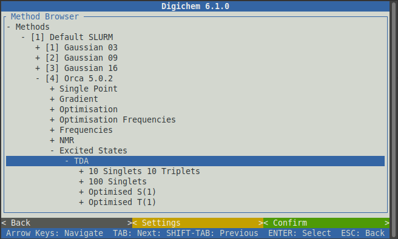Some of the available options are now cut-off below the screen. On your keyboard, use the down arrow to scroll downwards to see the full list of options:
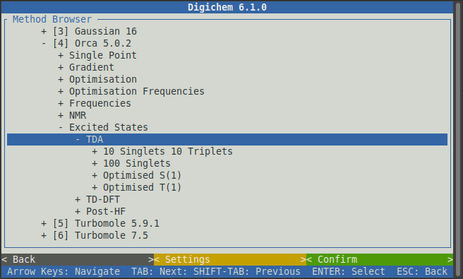Now click the 10 Singlets 10 Triplets option to reveal the same choice of functionals that we saw previously:
It’s normally a good idea to pick the same type of calculation (functional/wavefunction and basis set) for the property calculation as was used for the optimisation, so we will again chose PBE0, Gas Phase, and def2-SVP:
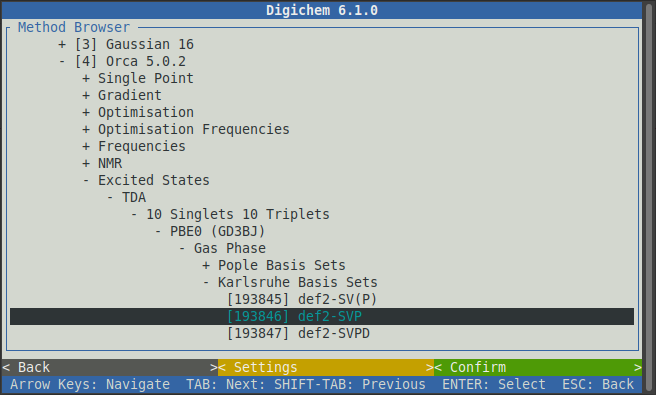Now click the green < Confirm > button to load the selected methods from the internal library:
Digichem will then return to the main submission screen, with the two chosen calculations shown under
Calculation Methods:
As with the molecules, any methods loaded by accident can be removed by clicking on the relevant < r > button:
While the order in which the calculations will run can be changed with the < ↑ > and < ↓ > buttons.
This can be important, as the output geometry of each calculation is used to start the next. The means the optimisation
calculation should appear before (above) the excited states calculation, otherwise the excited states calculation
won’t use the correct geometry!
Finally, the settings for each calculation can be changed by clicking on the relevant < m > (for modify) button:
For now, we are happy with the default calculation options, so we will not modify anything.
7. Submit!
Once you are ready to submit the chosen calculations, click the green < Confirm > button:
Another blue window will appear to track the submission process, which is normally very quick:
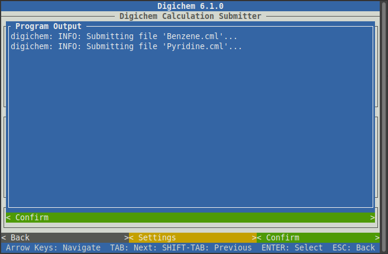Once Digichem says Successfully submitted 2 file(s), the process is complete and the window can be closed by
clicking the green < Confirm> button:
Each of the selected molecules will be submitted to the first calculation in the queue. In our case, this was the optimisation calculation. Once this is complete, Digichem will automatically submit to the next calculation (here, this was the excited states calculation) and so on, until all calculations are complete (or an error occurs).
You can now safely close Digichem. You can do this by clicking the < Back > button to return to the main menu (followed by clicking
the < Quit > button), or by pressing ‘esc’ on your keyboard until you return to your normal terminal.
Congratulations! You have submitted your first calculations with Digichem!